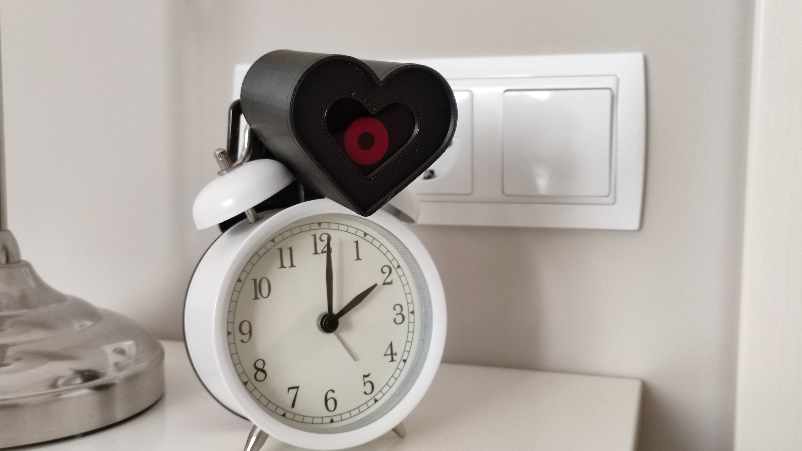
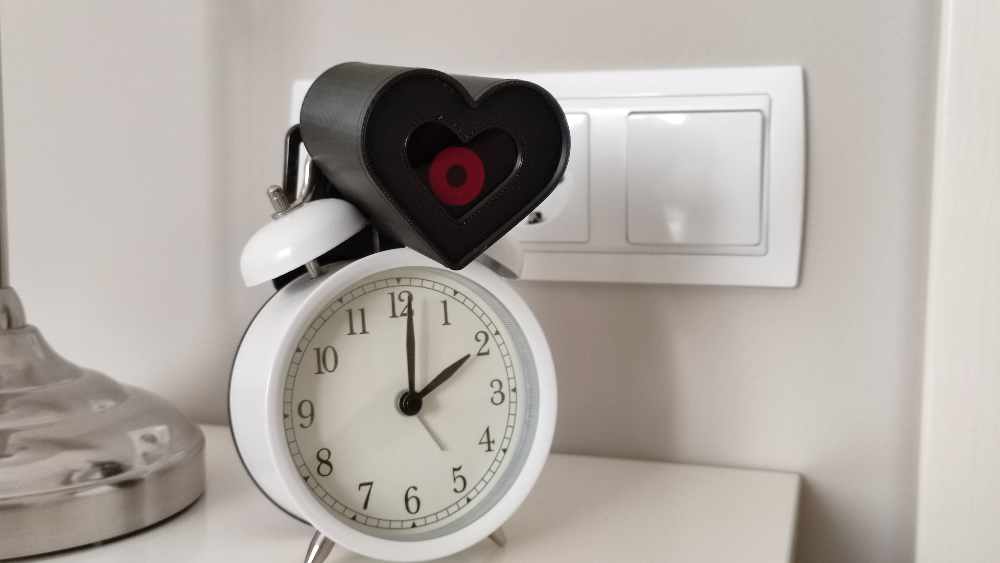
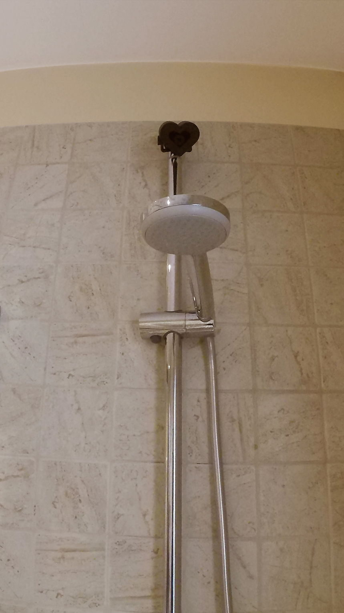
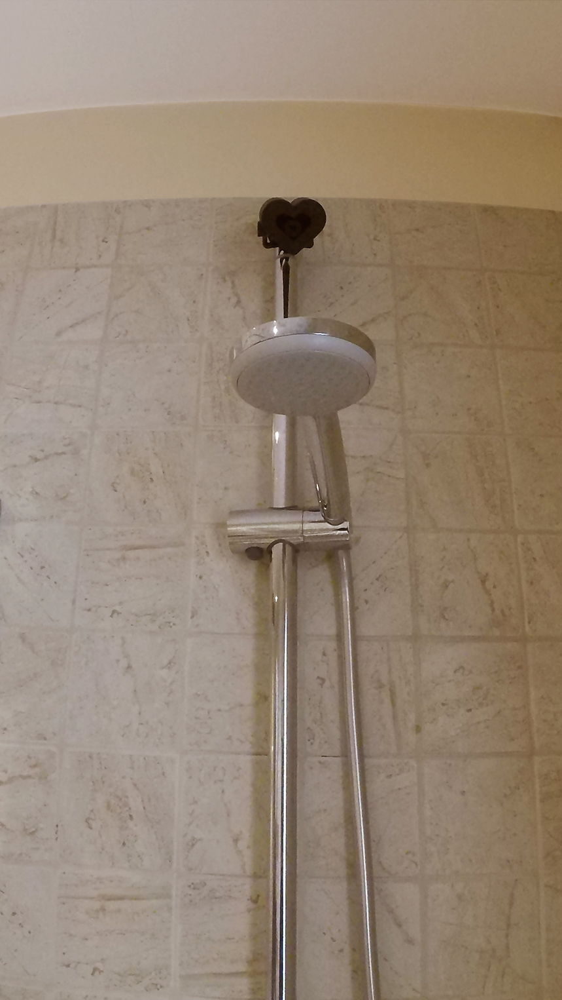

ISO (International Organization for Standardization) es una organización que recoge, actualmente en la versión ISO:7001 creada en 2007, iconos y símbolos estándar de lugares públicos (Pater, R., 2016). Pero estos iconos no son universales, de hecho un estudio de Portugal realizado por Pedro Bessa (2008) 一profesor de Estudios en Diseño y Sociología en la Universidad de Aveiro一 concluyó que de 722 iconos, en 360 aparecían representados hombres y en tan sólo 87 había mujeres, casualmente perpetuando estereotipos sociales y de género.
Según Bessa, algunas de las razones porque los diseñadores no han cambiado algunos símbolos públicos es porque tienen una mirada conservadora, también porque es necesaria la caracterización para simplificar y porque los cambios pueden llevar a confusiones, ambigüedad o desconfianza. Ya se han dado casos de rediseño como semáforos con siluetas de mujeres en lugar de hombres y con parejas homosexuales, o señalizando el espacio para cambiar pañales con un hombre en lugar de una silueta humana con un vestido.

Sandra Párraga (2021) Fotografías en espacios señalizados de Barcelona.
Otro caso muy interesante es el del icono de gente discapacitada (Pater, R., 2016), diseñado en 1968 a través de la silueta de una persona sentada en una silla de ruedas sin sensación de movimiento. Desde una perspectiva crítica las preguntas que formulamos son: ¿Por qué una silla de ruedas, si mucha gente con discapacidad no utiliza? ¿Por qué el individuo está representado de forma pasiva? ¿Por qué no se ha cambiado este icono después de 53 años?
Brian Glenney y Sara Hendren están trabajando en “The accessible icon project” que empezó como un proyecto de arte callejero
en forma de pegatinas. Diseñaron su versión del icono de discapacidad en una posición de movimiento, con líneas curvas, con motricidad; el proyecto acabó teniendo la fuerza suficiente para convertirse en un proyecto de diseño activista por la inclusión social en espacios urbanos, con un gran número de colaboradores y gente dispuesta a utilizar su icono (Klein, A. y Thietz, K., 2018).
El objetivo de su diseño no era (ni es) cambiar todos los iconos de diversidad funcional del mundo, sino generar espacios de debate, hacer preguntas sobre la política de la discapacidad, el
acceso y la inclusión. Los símbolos son representaciones simbólicas, no literales, y Sara Hendren (2015) apoya el hecho de que se siga dibujando una silla de ruedas porque la legibilidad y reconocimiento del símbolo son muy importantes.
Wikipedia (2011) Icono de accesibilidad ISO:7001.
Hendren, S., (2015) The accessible icon project.
Por lo tanto concluimos que el diseño (como tantas otras disciplinas) puede seguir reproduciendo estereotipos socioculturales que influyen en nuestros comportamientos sociales, o bien puede hacer pensar desde la crítica, la investigación, el hackeo, el rediseño y la innovación.

 
 
